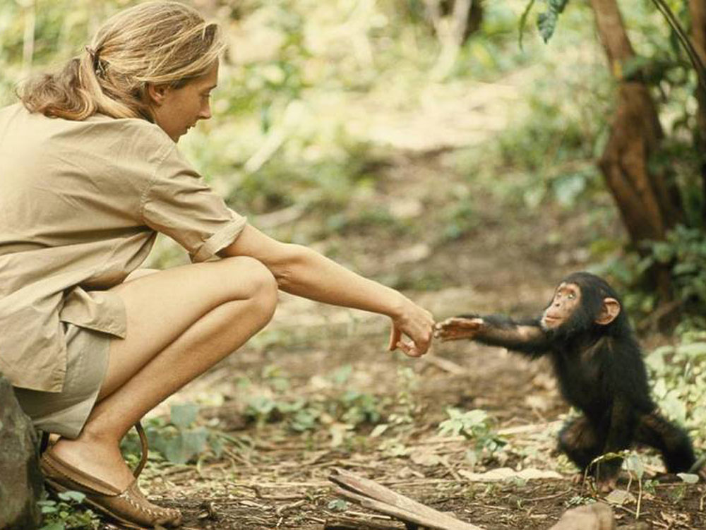
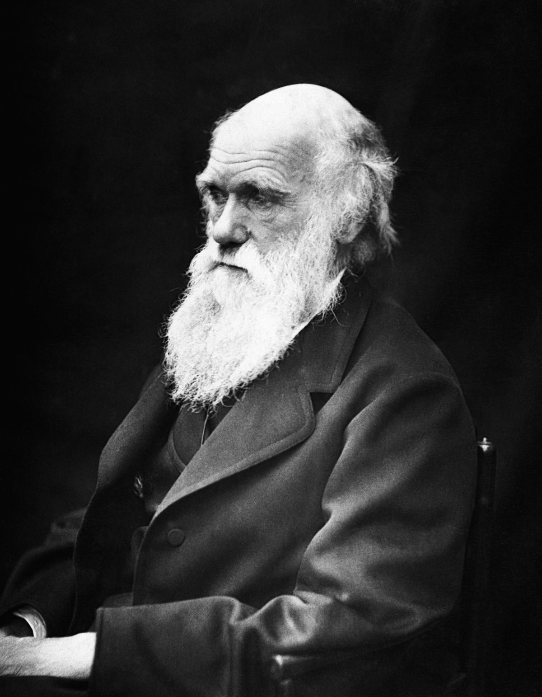
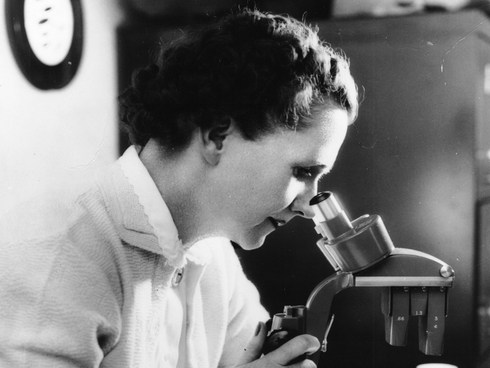
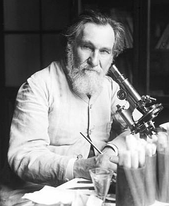
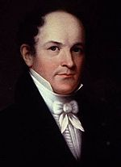

Zoologist
Scientists
These are some famous scientists in multiple divisions of zoology that created a major impact to the world of zoology and the world itself.

Jane Goodall: Animal activist and world's best expert on chimpanzees and gorillas

Charles Darwin: Discovered the Theory of Evolution

Rachel Carson: Writer of Silent Spring and convinced the government to ban the use of certain pesticides

Ilya Ilyich Mechnikov: Winner of the Noble Peace Prize for the pioneer of research in the immune system

Thomas Nuttall: Botanist that discovered a variety of North-American plant species